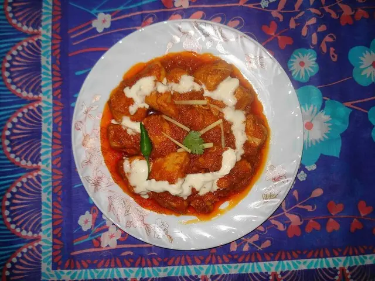

Authentic Pakistani Recipes
Discover traditional Pakistani food with clear ingredients, cooking times and easy step-by-step methods. Start with these detailed recipe pages and explore the full collection on Pakistan Food.

Chicken Biryani
Aromatic basmati rice layered with spiced chicken and traditional Pakistani flavours.

Chicken Karahi
Classic tomato-based chicken karahi with green chilies, ginger and fresh spices.

Chicken Handi
Creamy Pakistani chicken handi cooked with yogurt, tomatoes and aromatic spices.
Beef Nihari
Slow-cooked beef nihari with deep spices and rich traditional flavour.
More detailed recipe pages will be added from the main Pakistan Food collection to help visitors and search engines discover every recipe.